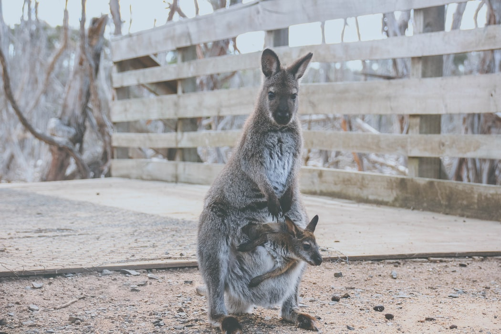
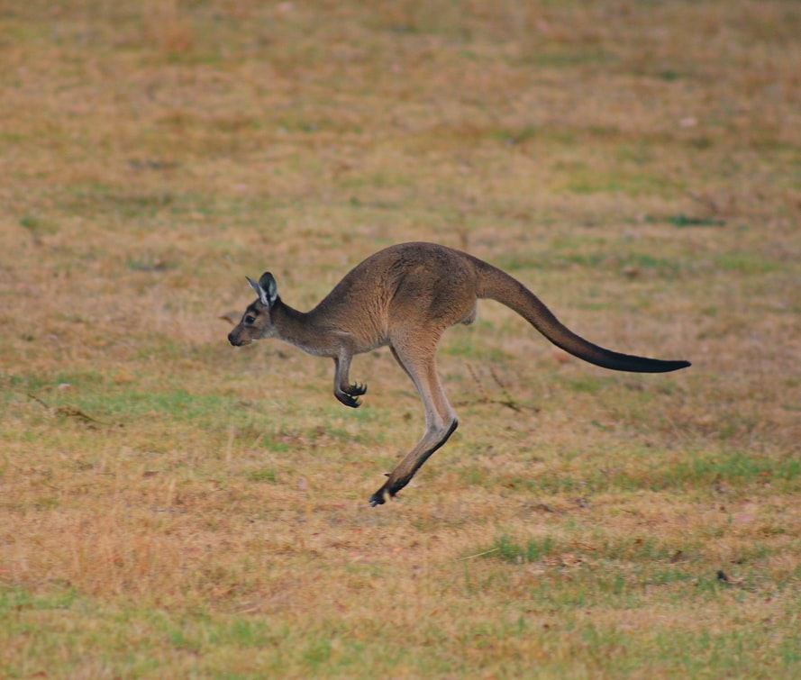

Kangaroo As Specie
There are around 50 million kangaroos in Australia, which implies
there are far more kangaroos than people! Kangaroos are classified
into 55 distinct species. Although wallabies are typically smaller
than kangaroos, kangaroos exist in a variety of sizes. Some are
extremely light and small, while others may weigh up to 90 kg/198
lbs. Kangaroos frequent the wilderness in many rural locations.
Pebbly Beach, a four-hour journey south of Sydney, is one of the
greatest sites to see kangaroos. Kangaroos all have short hair,
strong hind legs, short forelimbs, large feet, and a long tail.
They have exceptional hearing and acute vision. Their fur coats
can be red, grey, or light to dark brown, depending on the
species. Kangaroos are well-known for their distinctive mode of
locomotion: hopping! They attain speeds of up to 60kph and can
clear more than 8m in a single leap! Their strong tail is employed
for balance and as an additional limb as they jump. They also swim
with their tails; yes, kangaroos are excellent swimmers! They swim
to evade predators and are capable of drowning pursuers with their
forepaws.


Kangaroo Behaviour
Kangaroos, like other marsupials, have pouches where joeys are
nurtured, receiving milk from mammary glands. Females have one
young each year, however they can retain additional embryos
inactive (‘embryonic diapause') until the first joey leaves the
pouch. They may also have a joey at their feet, one in the pouch,
and one in diapause all at once. Surprisingly, each of the
female's four teats supplies different milk for the joeys at
distinct phases of development. When disturbed, kangaroos hiss and
growl, mothers create clicking noises to connect with their young,
and males ‘chuckle' during courting! Kangaroos also are active
between dark and dawn, searching for their favorite meals, which
include grass, plants, ferns, flowers, fruit, and moss. They
regurgitate their meal, eating it twice before it travels through
their chambered stomach, just like cattle. Kangaroos require free
water to exist; but, when desperate, they have been known to dig a
metre-deep trench in quest of water.